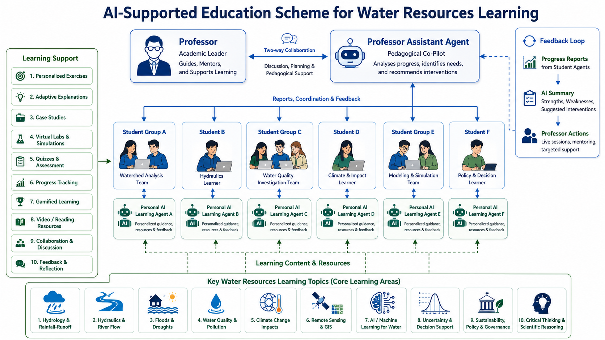

Agentic Understanding, Reflection and Adaptation for Learning — an AI-supported educational framework that personalises learning while strengthening the role of the teacher.
Not to replace the teacher, but to create an intelligent learning environment where each student receives adaptive support and teachers gain meaningful pedagogical insight.
Three interconnected agents create a closed feedback loop: individual learning informs group-level teaching, which feeds course-level evaluation and continuous improvement.
Designed for water and environmental science education, covering watershed analysis, hydraulics, water quality, climate impacts, modelling, and policy decision-making.
How professors, AI agents, and students collaborate in a dynamic, feedback-driven educational environment for water resources learning.

AI-Supported Education Scheme for Water Resources Learning · Ai-LEARN Consortium, 2025
Each agent operates at a different level of the system, creating a coherent and self-improving pedagogical architecture.
A personal AI learning guide for each student. Provides exercises, examples, explanations, games, and videos adapted to learning style, progress, and difficulties. Follows the full learning cycle.
A pedagogical assistant for the lecturer. Synthesises progress reports from all student agents, identifies group-level patterns — strengths, misconceptions, pacing — and prepares targeted teaching guidance.
An independent course observer. Monitors knowledge development before and after the course, compares expected outcomes with actual progress, and builds a long-term evidence base to improve future editions.
Individual Level · Personalised Guidance
Acts as a personalised tutor and learning companion — it does not simply answer questions. It follows the learning process and helps the student build understanding progressively.
Each student has an individual AI guide. If a student struggles with a mathematical concept, the agent first provides an intuitive explanation, then a visual example, then a guided exercise, and finally a question that checks independent application. The agent adapts based on what has been tried and what has worked.
The Student Agent's role is to:
Group Level · Pedagogical Intelligence
Transforms individual student reports into actionable pedagogical intelligence. It identifies patterns that would otherwise be difficult to detect in a large or diverse class.
The teacher agent helps the lecturer answer questions that would otherwise require reviewing dozens of individual reports.
During planned in-person or synchronous sessions, the teacher remains the main driver of the learning process. AURA-Learn enriches — not replaces — these sessions.
Before a session, the teacher agent may indicate that several students understand the definition of a concept but struggle to apply it in a real case. It may suggest opening the session with a practical example, asking students to explain their reasoning aloud, then providing a complementary explanation bridging theory and application.
In this way, the AI system enriches the teacher's work. It creates space for student questions, peer discussion, and teacher-led clarification. The human teacher remains responsible for judgment, motivation, interpretation, and the final pedagogical direction. The agent provides intelligence; the teacher provides wisdom.
Course Level · Longitudinal Evidence
Follows the entire course from a neutral, longitudinal perspective — observing reports from the student agents, the teacher agent, and course development across time and cohorts.
This component transforms the course into a self-improving learning system. Each new edition benefits from the accumulated evidence of previous editions.
AURA-Learn operates through a structured six-phase daily cycle, with each agent responsible for specific phases of the process.
Student works with exercises, examples, videos, games, or explanations adapted to their current level and learning style.
Agent identifies strengths, weaknesses, misconceptions, and areas to revisit or explore more deeply.
Student progress is summarised in a structured report and sent to the teacher agent for group-level synthesis.
Teacher agent analyses all student reports, identifies group-level patterns, and generates teaching recommendations.
Lecturer reviews recommendations, adjusts examples, pace, or support sessions, and prepares the next interaction.
Independent evaluator monitors progression, compares against expected outcomes, and updates the long-term learning evidence database.
AURA-Learn — Agentic Understanding, Reflection and Adaptation for Learning — is an AI-supported educational framework designed to personalise learning while strengthening the role of the teacher. Each student is supported by an AI learning guide that provides exercises, examples, links, games, videos, and explanations adapted to the student's learning style and progress.
These reports are shared with a teacher agent, which synthesises the progress of the group, identifies common difficulties, suggests examples and questions, and helps the lecturer decide whether the course pace is appropriate or whether additional support is needed. During face-to-face sessions, the teacher agent assists the lecturer in preparing targeted discussions, while the teacher remains the main driver of the learning process.
An independent evaluator agent follows the course development, compares knowledge before and after the training, and contributes to a growing database of learning evidence. In this way, AURA-Learn creates a progressive learning system in which students receive personalised guidance, teachers receive pedagogical intelligence, and future courses improve through accumulated knowledge.
— Ai-LEARN Consortium, 2025Together, the three agents create a continuous feedback loop between learning, teaching, and evaluation.
Personalised guidance, exercises, feedback, and daily learning reflection. Works at the individual level, adapting in real time to each student's trajectory.
Synthesis of student progress, teaching recommendations, and support for face-to-face sessions. Works at the group level, informing the lecturer's pedagogical decisions.
Independent monitoring of course development, knowledge gain, and long-term improvement. Works at the course level, feeding insights across cohorts and editions.